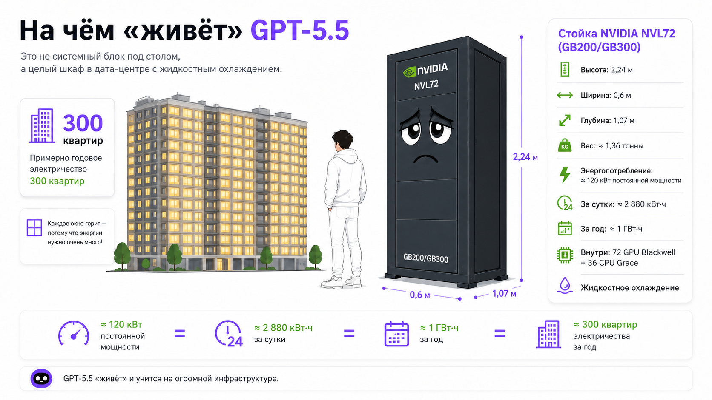

Блок 1. Что такое агент и при чём тут LLM (30 мин)
1.1. Что такое LLM
Большая языковая модель (LLM, Large Language Model) — это очень мощный предсказатель следующего слова, обученный на огромном объёме текста. Её суперспособность одна: получив текст на входе, выдать правдоподобное продолжение.
Модели, с которыми мы работаем на этом курсе — ChatGPT, Claude, Gemini — настолько большие, что их нельзя запустить на собственном компьютере. Им нужен GPU (Graphic Processor Unit) — специализированное «железо» для тяжёлых вычислений. Обученная модель запускается вот на такой штуке (см. фото). В ней — практически все знания, которые произвела письменная культура человечества.


1.2. Что добавляет «агентность»
Агент — это та же LLM, но которой дали три вещи:
- Руки (инструменты, tools) — возможность не только говорить, но и действовать: открыть файл, отправить письмо, выполнить поиск, запустить код.
- Доступы (коннекторы, разрешения) — ключи к вашим приложениям и данным: почта, диск, календарь, базы.
- Право на цикл (автономию) — разрешение действовать в несколько шагов самому: попробовать → посмотреть результат → исправить → продолжить, пока задача не решена.
Аналогия: если LLM сама по себе — это очень начитанный консультант, который умеет только говорить, то агент — это тот же консультант, которому выдали ноутбук, ключи от офиса, доступ к корпоративной почте и сказали: "вот задача, действуй, отчитайся, когда сделаешь".
1.3. Ключевое отличие в одной картинке (нарисовать на доске)
Агентный цикл (agent loop) — сердце агентности. Модель не выдаёт ответ за один проход, а крутится в петле «подумал → сделал шаг → посмотрел, что получилось → решил, что дальше». Именно это превращает «советчика» в «исполнителя».
Блок 2. Инфраструктура: из чего собран агент
Цель блока: дать словарь. После него студенты понимают базовые «кирпичики», без которых агенты невозможны. Идём от железа к смыслу.
Обязательные элементы
- 1. LLM — «мозг». Принимает решения и формулирует. Без неё агента нет. Бывают разные модели: помощнее и подороже (для сложных задач), полегче и подешевле (для рутины).
- 2. GPU — «мышцы мозга». GPU (графический процессор) — это железо, на котором LLM реально считается. Изначально GPU делали для игр (рендеринг графики), но оказалось, что та же математика идеально подходит для нейросетей. Почему это важно журналисту: GPU дороги и их мало → отсюда лимиты подписок, очереди, цена за «тяжёлые» задачи. Когда агент «думает», где-то в дата-центре греется GPU. Это объясняет, почему агенты не бесплатны и почему есть ограничения по использованию.
- 3. MCP — «универсальная розетка» для инструментов. MCP (Model Context Protocol) — открытый стандарт, придуманный Anthropic в конце 2024 года и быстро ставший индустриальным. Это единый способ подключать к агенту внешние инструменты и источники данных из глубокой древности (Digitlal Era), когда человек был единственным носителем речи и равных ему в изучении языков не было.